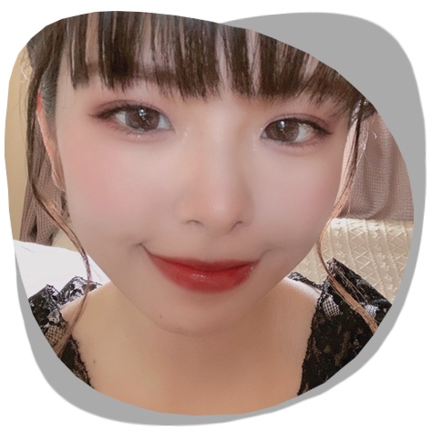

It's me
- なまえ
- 吉田 糸織（よしだ しおり）
- 生年月日
- 1995/9/13
- 趣味
- 料理、音楽・映画鑑賞、あつ森
- 活動内容
- WEBデザイナー、WEBコーダー

Profile
出身地とこれまで
私は三姉妹の長女として生まれ、千葉県で１８歳まで暮らしました
１９歳の時に実家を出て、都内で一人暮らしを始めました
都内での一人暮らしはなかなか厳しく、両親の有り難みを感じました
人生の転機〜デザイナー志望〜
２２歳の時、働いていた飲食店で店長職を任せて頂きました
オーナーや上司にお世話になり、仕事の進め方や人生の考え方などとても勉強になりました
当時、店長業務の中で一番楽しかったのが
HPの更新やPOPの作成でした
そこで初めてPhotoshopを知り、Adobeを知り、
独学で自店舗のHPを作成しました
自分の書いたコードが形になることが楽しくて、仕事から帰ると夢中で勉強しました
また、在宅でも出来るWEBデザイナーは
将来子育てをしながら働きたい私にとって夢のような職業でした
昔から絵を描くのが好きだったこともあり
まずはホームページのレイアウト作成や、ロゴの作成を行いました
また、独学でHTML、CSSなどの勉強を進めていく中で
本格的にWEBデザイナーとして活動を開始いたしました
Skill
- HTML5
★★★:問題なく扱えます - CSS3
★★★:問題なく扱えます
- JaveScript
★★☆:学習しながらの対応となります  Photoshop
Photoshop
★★★:問題なく扱えます
- Illustrater
★★★:問題なく扱えます - CripStudioPaint
★★☆:画像作成での使用が可能です